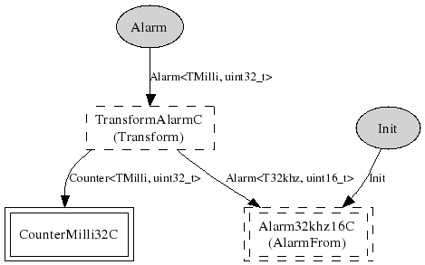

Component: tos.chips.msp430.timer.AlarmMilli32C
generic configuration AlarmMilli32C()
AlarmMilliC is the alarm for async millisecond alarms
- Author:
-
Cory Sharp <cssharp@eecs.berkeley.edu>
- See:
-
Please refer to TEP 102 for more information about this component and its
intended use.
Provides
interface
Alarm<TMilli, uint32_t>
Wiring
